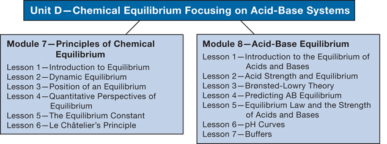

In Module 7 you will investigate the principles of chemical equilibrium. As you proceed through this module, you will investigate many chemical systems. You will come to understand many characteristics of equilibrium, and you will learn how systems in equilibrium behave. You will be asked to pay special attention to specific properties of each of the systems you investigate.
You will consider the following module questions:
In Module 8 you will apply your understanding of the principles of equilibrium to understanding chemical systems containing aqueous acids and bases. You will use your knowledge of dynamic equilibrium, equilibrium position, and shifts in equilibrium. You will also rely on your ability to analyze an equilibrium system using quantitative techniques (like calculating a value for the equilibrium constant, Kc) and your ability to complete an ICE table.
You will consider the following module question:
Each module and lesson contains focusing questions intended to guide your study. The following concept organizers list the module and lesson questions:
As you work your way through each module, think about how the lesson questions relate to the module questions and to questions from other lessons. Use the concept organizers to build a concept map or a graphic organizer for each module. To do this, you might use software you already have on your computer, or you might do an Internet search for free software you can use. In your concept map or graphic organizer, record and demonstrate how the lesson and module concepts are connected and interdependent.
Sample concept maps are provided in the Module Summary for each module. Remember that the samples are just that—they show only one of many possible descriptions. However, if your completed concept map or graphic organizer differs significantly from the sample, you may wish to contact your teacher or to compare your map or organizer to those of your classmates. This will ensure that your interpretations of lesson materials and your descriptions are accurate.